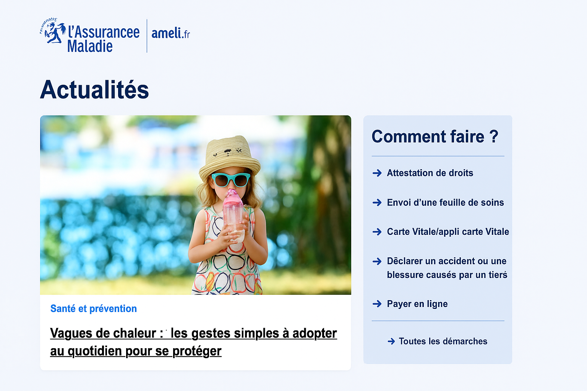
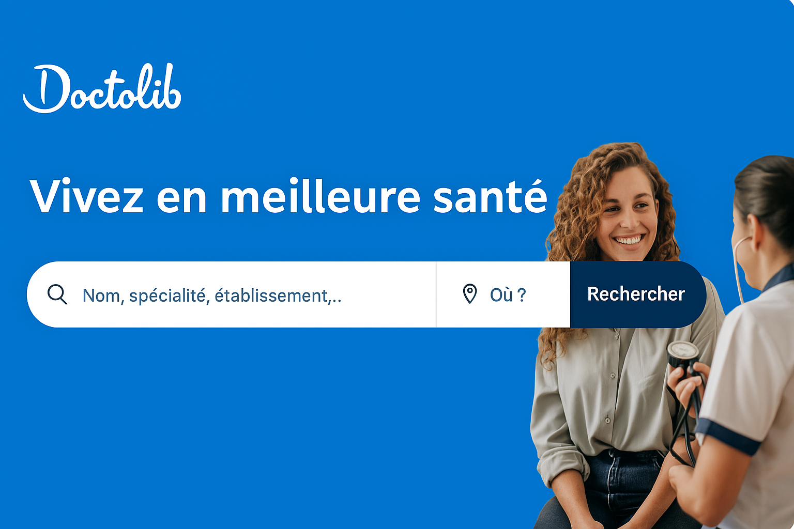
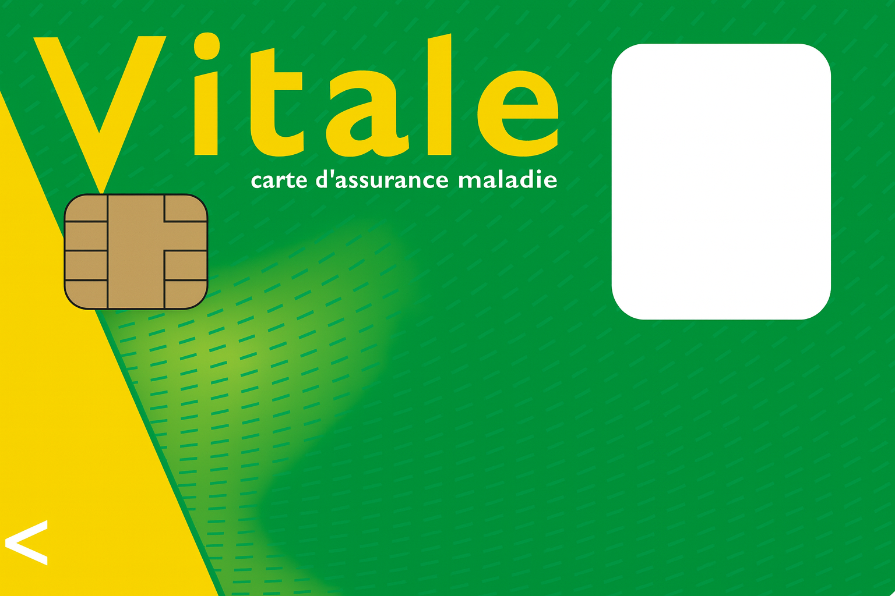

 Source : Ameli et CHATGPT 5
Cinq points principaux seront abordés dans cette partie :
- Inscription sur le site étudiant-étranger.ameli.fr
- Déclaration d’un médecin traitant
- Création d’un compte Ameli
- Commande de la carte Vitale
- Demande de complémentaire santé solidaire
D’autres sujets plus en actualité comme par exemple la santé mentale des étudiants pourront être abordés ultérieurement.
La santé une fois en France
En France, le système de santé est particulièrement favorable aux étudiants, y compris les étudiants étrangers.
Dès votre arrivée, certaines démarches sont indispensables pour bénéficier pleinement de vos droits.
Inscription sur le site etudiant-etranger.ameli.fr
En France, chaque assuré possède un numéro de Sécurité sociale qui permet de l’identifier de façon unique.
Pour obtenir ce numéro, vous devez demander une affiliation à la Sécurité sociale française via le site dédié.
Démarche :
- Rendez-vous sur le site etudiant-etranger.ameli.fr.
- Remplissez les informations demandées.
- Déposez les pièces justificatives requises (liste disponible sur le site).
- Téléchargez votre attestation provisoire d’affiliation avec votre numéro temporaire.
Il faudra ensuite conserver le numéro de sécurité sociale provisoire qui vous a été attribué automatiquement par le site et télécharger votre attestation provisoire d’affiliation à la Sécurité sociale.
- Une fois votre inscription validée, téléchargez votre attestation définitive (attestation de droits).
Si vous ne pouvez pas vous inscrire en ligne, contactez le 36 46 (service gratuit + coût d’appel).
Déclaration d’un médecin traitant
Dès que vous disposez de votre attestation (provisoire ou définitive), déclarez un médecin traitant. Le médecin traitant est un médecin vers qui vous vous dirigerez pour tous vos problèmes de santé. Pourquoi est-il nécessaire d’avoir un médecin traitant en France ?
Rôle du médecin traitant : - Premier interlocuteur pour vos besoins médicaux. c’est vers lui que vous devez aller si vous avez des problèmes de santé - Orientation vers un spécialiste si nécessaire. - Meilleur suivi médical et remboursement optimisé.
Choix du médecin traitant :
Le praticien choisi peut être un médecin généraliste ou spécialiste, exercer seul ou au sein d’un cabinet, dans un centre de santé ou encore à l’hôpital.
Pour trouver votre médecin traitant, il vous faut prendre un premier rendez-vous avec un praticien et par la suite le déclarer comme votre médecin traitant s’il vous convient et s’il est d’accord de vous prendre comme patient car ils sont très souvent bondés de patients et n’acceptent pas de prendre de nouveaux patients. Il faudra donc lui poser la question.
Pour prendre rendez-vous c’est simple, Doctolib facilite la vie…
 Source : Doctolib Prendre rendez-vous :
- Utilisez Doctolib pour trouver un praticien et réserver une consultation.
- Créez un compte sur le site ou via l’application mobile.
Création d’un compte Ameli
Le compte Ameli vous permet de : - Suivre vos procédures de santé et modifier vos informations. - Suivre vos remboursements. - Mettre à jour vos informations. - Poser des questions à votre caisse d’Assurance Maladie.
Comment créer un compte Ameli ?
Création : - Connectez-vous sur assure.ameli.fr ou via l’application mobile. - Disponible uniquement après obtention du numéro de Sécurité sociale.
Commande de la carte Vitale

La carte Vitale facilite le remboursement de vos soins.
La demande se fait en ligne via votre compte Ameli ou par courrier à la caisse d’Assurance Maladie de votre domicile.
Demande en ligne :
- Connectez-vous à votre compte Ameli.
- Allez dans Mes démarches > Ma carte Vitale > Commander ma carte Vitale.
- Sélectionnez l’assuré concerné.
- Vérifiez vos informations (état civil, adresse postale, adresse e-mail).
- Téléchargez les documents nécessaires à votre commande (il s’agit de : une photo d’identité numérisée et une pièce d’identité numérisée).
- Vérifiez puis validez votre commande.
Vous obtiendrez votre carte Vitale dans un délai de deux semaines, accompagnée d’une copie papier des informations qu’elle contient. Ce document est utile si jamais vous perdez votre carte Vitale ou si vous devez justifier de vos droits.
Demander la complémentaire santé solidaire
En France, la Sécurité sociale (Ameli) ne couvre pas la totalité des frais de santé.
En tant qu’étudiant boursier, vous pouvez bénéficier de la Complémentaire Santé Solidaire (CSS), qui prend en charge une part importante des frais non remboursée par l’Assurance Maladie.
Démarche pour souscrire :
- Connectez-vous à votre espace Ameli.
- Rendez-vous dans la rubrique Mes demandes et cherchez Complémentaire santé.
- Remplissez le formulaire en ligne et constituez un dossier (la liste des pièces vous sera donnée sur votre espace).
- Constituez le dossier : la liste précise des pièces à fournir sera disponible sur votre espace.
- Prenez rendez-vous auprès de la caisse d’Assurance Maladie de votre commune (en ligne ou sur place) pour le dépôt du dossier. Je pense qu’actuellement, tout se fait en ligne.
Obtenir la CSS dès votre première année est fortement recommandé : cela vous permet d’avoir vos frais de santé couverts à 100 % et de limiter considérablement vos dépenses médicales. Déclarer aussi vos revenus la première année de votre séjour en France. Cet avis d’imposition facilitera le renouvellement de la CSS pour les années suivantes.